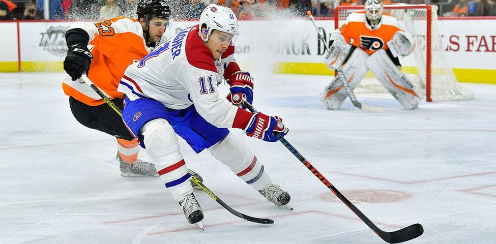

One of my favorite extracurricular activities is Hockey. I play for the San Diego Jr. Gulls and have many teammates. I have played hockey since I was a little kid and immediately had a passion for the sport. By playing hockey it has taught me to work as a team because hockey cannot be played as a one man sport. By working together with my teammates it has helped me in school with my group projects. This shows I can work successfully as a team member in my habits of mind.
Here is a picture of N.H.L hockey